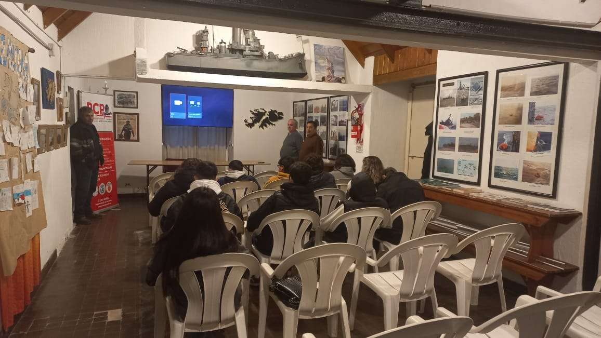

Noticias
Conmemoración del 42° Aniversario de la Gesta de Malvinas
A 42 años del inicio del conflicto bélico con Gran Bretaña, por la soberanía de las islas y archipiélagos del
Atlántico Sur, el presidente de la Asociación de Veteranos de Necochea, Julio Zapata valoró que se
continúe recordando la gesta, especialmente para las nuevas generaciones.
«Lo que debemos aprender de la guerra de las Malvinas es la defensa de nuestra soberanía y nuestros derechos como
país soberano, especialmente en relación a nuestros recursos naturales. Argentina peleó contra toda una
organización mundial, no solo contra el Reino Unido. Es importante entender que esta lucha va más allá del
gobierno militar de ese entonces.
Las guerras son por los recursos naturales, hay que entender por qué son las guerras», apuntó charlando
en la mañana de K2 Radio, tratando de despegar el contexto político de la guerra y el espacio que los diferentes
gobiernos democráticos le han dado desde entonces a la figura del excombatiente.
“Marcó nuestras vidas y la de muchos argentinos”, comentó Julio Zapata, quien en 1982 contaba con apenas 20 años
y participó del conflicto como tripulante del ARA Crucero General Belgrano, hundido el 2 de mayo, pocas horas
después del inicio de la batalla.
Entrevista radial a dos veteranos de la Asociación
Alejandro Lombardi nació en Necochea en 1962. Daniel Pinto llegó al mundo en Las Heras, en 1963, pero hace poco
más de diez años vive en nuestra ciudad. Este viernes hablaron con Quimey Marfil en Radio Maestra 97.3, en una
extensa y emotiva charla en la que contaron detalles de su experiencia en las islas
Luego de un servicio militar en Mar del Plata en el caso de Alejandro, y en Comodoro Rivadavia Daniel, ambos
fueron trasladados a Malvinas a mediados de abril donde comenzaron el despliegue y los preparativos ante la
inminente llegada de las Fuerzas Armadas británicas. Si bien ambos se desempeñaban en la artillería antiaérea,
las experiencias fueron diferentes. Alejandro estuvo toda la guerra en Puerto Argentino, defendiendo la base con
modernos cañones de 35 mm. Darío, por su parte, fue enviado a Pradera del Ganso, lugar donde se dio una de las
batallas más encarnizadas y decisivas de la guerra, y donde tuvieron que hacer frente a los poderosos Harrier
con cañones de 20 mm manuales y mucho más rudimentarios y con radares que sólo detectaban a los aviones
británicos a escasos 20 kilómetros de distancia, apenas unos segundos antes de que éstos bombardearan las
posiciones argentinas. Algunos graves errores tácticos por parte de los oficiales aumentaron aún más el drama de
su posición.
Si bien ambos coinciden en que tuvieron buenas experiencias con sus oficiales superiores de la Fuerza Aérea,
reconocen que, en otros casos, principalmente en el Ejército, se dieron situaciones de maltratos e incluso
presenciaron la situación de soldados estaqueados por sus superiores, una evidencia de las diferencias que había
dentro de las Fuerzas Armadas, principalmente entre las distintas armas.
Con el paso de los días, el frío, el hambre y el recrudecimiento de los combates fueron cambiando el estado de
ánimo de los jóvenes soldados argentinos. “El cambio fue tremendo”, reconoce Daniel. El entusiasmo de la llegada
derivó en cansancio y finalmente en un agotamiento donde el único pensamiento posible era desear que terminara
la guerra. “Psicológicamente estábamos muy mal. El resultado lo analizarán los gobiernos, nosotros queríamos que
se terminara la guerra”, señala Alejandro.
El intendente necochense recibió a los Veteranos en el 42° aniversario de Malvinas
En el marco del 42° Aniversario de la guerra de Malvinas el intendente de la ciudad de Necochea recibió en su
despacho a un grupo de veteranos pertenecientes a la Asociación de Veteranos de Necochea. Este encuentro formó
parte del homenaje realizado que comenzó con la colocación de ofrendas florales en el Monumento a los Caídos y
Combatientes de Malvinas en el centro de Necochea, continuando luego en Quequén, donde se encuentra el monumento
que perpetúa el recuerdo de los caídos. El sonido del Himno Nacional Argentino y un minuto de silencio marcaron
el respetuoso tributo a aquellos que dieron su vida por la patria.
Acciones
En 2023 alrededor de treinta instituciones visitaron la sede

La Asociación recibió alrededor de treinta instituciones de diferentes niveles educativos, tanto del ámbito
público como privado en su sede ubicada en calle 4 Nº 4590, donde se realizaron actividades didácticas, en este
primer semestre el año.
En este sentido, Alejandro Lombardi y Julio Zapata manifestaron su agradecimiento a todos los que
participaron, que mostraron “interés y respeto durante los encuentros”. Además de las actividades
didácticas, los alumnos observaron la muestra fotográfica y escucharon la charla sobre la Guerra de
Malvinas.
Lombardi expresó: “Los alumnos y docentes conocieron nuestras historias y experiencias de vida. El objetivo
es mantener viva la memoria de los 632 héroes que dieron su vida por la defensa de la soberanía nacional,
transmitir y difundir a la sociedad la Gesta de Malvinas, dando charlas, conferencias y talleres, en
instituciones y colegios, públicos y privados, participando en actividades benéficas y solidarias”